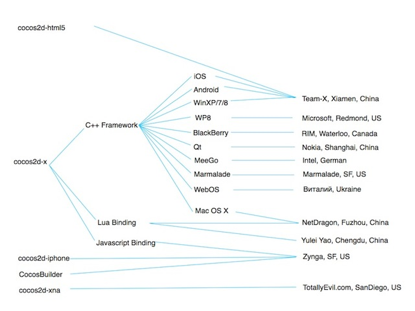

关于我们
我们立志创造一个世界顶级的开源项目
关于我们
- Cocos2d-x
- Cocos2d-html5
- 许可证
- 主要贡献者及维护者
- 财力支持者
1.Cocos2d-x

Cocos2d-x是MIT许可证下发布的开源游戏引擎，游戏开发快速、简易、功能强大。Cocos2d-x核心优势在于允许开发人员利用C++、Lua及Javascript来进行跨平台部署，覆盖平台包括iOS、Android、Windows Phone、黑莓（BlackBerry）及Tizen等等，省事省力省成本。
Cocos2d-x用户不仅包括个人开发者和游戏开发爱好者，还包括许多知名大公司如Zynga、Wooga、Gamevil、Glu、GREE、Konami、TinyCo、HandyGames、IGG及Disney Mobile等。截止2013年9月，全球基于Cocos2d-x引擎的游戏下载量高达逾15亿，其中许多还占据苹果应用商店（AppStore）和谷歌应用商店（Google Play）排行榜。同时许多公司如触控、谷歌、微软、ARM、英特尔及黑莓的工程师在Cocos2d-x领域也非常活跃。
2.Cocos2d-html5
自2012年3月，Cocos2d-html5成为Cocos2d-x旗下分支游戏引擎，针对台式电脑、平板电脑及手机中支持HTML5的浏览器而设计。
3.许可证
上述所有分支游戏引擎均是MIT许可证下发布的。
利用cocos2d系列框架，我们可以容易地在iOS, Android, Windows Phone 8, BlackBerry（黑莓）, Marmalade, WindowsXP/Windows7, Linux, Mac OSX, Windows8 Metro 及Native Client (NaCl)上创建游戏或将游戏导入其中。详情请参见支持平台。
4.主要贡献者及维护者

5.财力支持
目前，Cocos2d-x, Cocos2d-html5及Cocos Studio由触控科技提供财力支持。欲了解更多有关触控科技公司的信息请点击chukong-inc.com